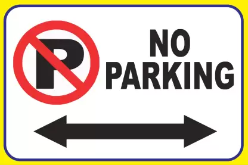

priject assesment !
HELLOW THERE !
hellow everyone this is aditya this side working in
New project.I hope you like this con.
There is an blog on trafic rules in no parking.Well, it
seems quite redundant to bring up the fact that people should not
park their vehicles in No-Parking zones. However, it’s an
unfortunate reality that every year thousands of drivers
breach this basic law provision. More importantly,
nearly all the people guilty of parking in No-Parking
spaces don’t have criminal backgrounds, and neither
is there any malicious intent behind exhibiting
this behavior.
This means people mostly violate this law by mistake
or when they don’t have any other parking
option. Let’s try to dissect the reasons
that lead to the violation of this basic civic
law by many.
want to read more about no parking blog click here
